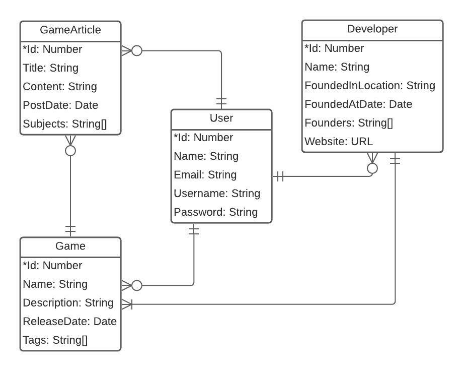

Description
This website was inspired bij Avans University of Applied Science. It lets you add your favorite games and seek information about them!
Good afternoon. I am very pleased with you visiting my website!
Justin
Developer
Data model
The website is build based on the following data model
Explanation
A user can have zero or more games, reviews and developers. A game can have zero or more reviews and a review always belongs to one game. A game always has one developer and a developer has one or more games. A game has zero or more tags associated to it.